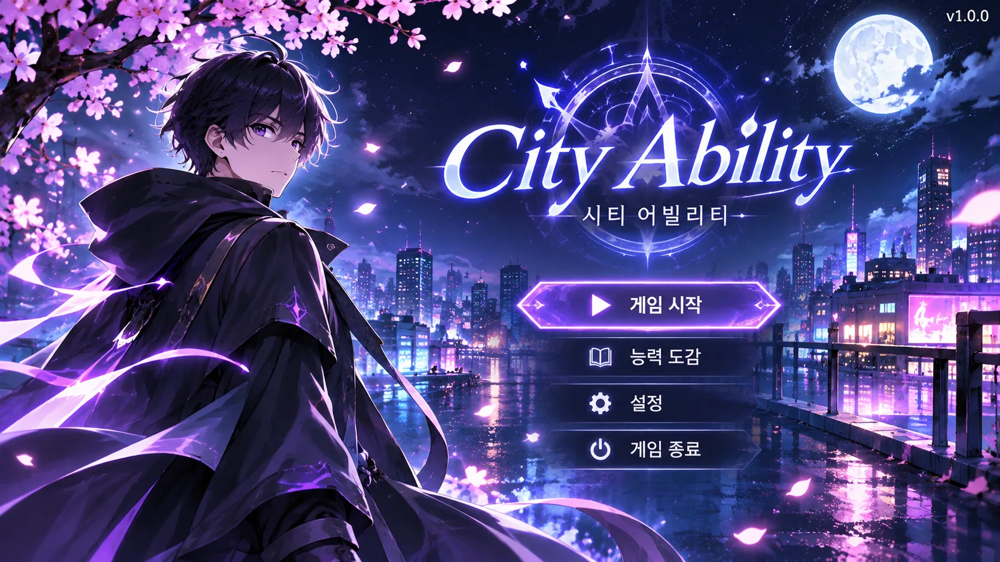
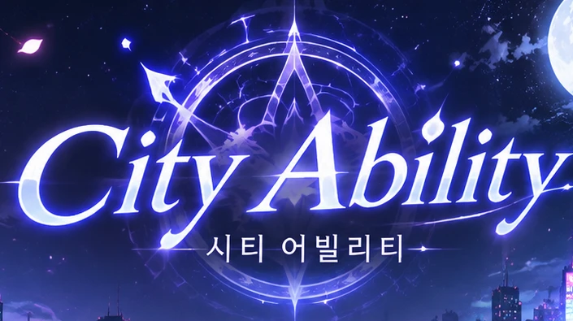

도시능력자
능력자 대전4~10인 난투탑다운 · 수동 조준웹(HTML/JS)
1. 한 줄 컨셉
각성한 능력자들이 도시 한복판에 모여 최후의 1명이 남을 때까지 싸우는 탑다운 대전 게임. 이 프로토타입은 나와 AI 봇 3~9명의 난투입니다.
세계관과 이름은 임시입니다. 원하는 도시능력자 설정이 있으면 알려주세요. 거기에 맞춰 바꿀 수 있어요.
2. 경기 규칙
- 시작 전에 인원(4, 6, 8, 10명)을 고릅니다. 나를 뺀 나머지는 AI 봇입니다.
- 능력은 14종 중 무작위로 한 번 정해지고, 마음에 안 들면 한 번만 다시 뽑을 수 있습니다.
- 모든 참가자가 서로 다른 능력을 갖습니다. 내 능력이 정해지면 봇들이 남은 능력을 나눠 가집니다.
- 3초 카운트다운 뒤 시작. 마지막까지 살아남으면 승리, 중간에 쓰러지면 그 시점의 순위가 결과가 됩니다.
- 넓은 맵(8×8 블록 도시): 중앙에 큰 광장, 곳곳에 공원과 건물이 있습니다. 화면 오른쪽 위 미니맵에 자기장과 참가자 위치가 보입니다.
- 자기장: 20초 뒤부터 안전 구역이 중앙으로 줄어듭니다. 밖에 있으면 초당 14 피해를 입습니다.
- 구르기(쿨 2.5초)는 짧은 무적이 있어서 상대 스킬을 피하는 핵심입니다.
3. 능력 14종
| 능력 | 기본 공격 (조준 방향) | 스킬 |
|---|---|---|
| 화염 | 화염구. 맞은 곳 주변에 약한 범위 피해. | 폭염: 주변 폭발과 넉백, 날아오는 탄 제거 (쿨 7초) |
| 전격 | 매우 빠른 번개탄. | 낙뢰: 앞쪽에 표식이 생기고 0.55초 뒤 낙뢰. 피할 수 있음 (쿨 6초) |
| 중력 | 짧은 부채꼴 충격파와 넉백. | 중력장: 앞쪽에 2.6초간 끌어당기는 장판 (쿨 9초) |
| 빙결 | 얼음 화살. 맞으면 1.5초간 느려짐. | 서리폭풍: 주변 적을 1.2초간 얼림 (쿨 9초) |
| 그림자 | 빠른 단검 베기(근접). | 그림자 이동: 조준 방향으로 순간이동, 짧은 무적 (쿨 5초) |
| 신체강화 | 강한 주먹과 넉백. 체력 350으로 시작. | 돌진: 조준 방향으로 돌진, 부딪힌 적에게 피해와 넉백 (쿨 6초) |
| 독 | 독침. 맞으면 3초간 지속 피해. | 독구름: 3.2초간 머무는 독 장판, 안에 있으면 독이 쌓임 (쿨 9초) |
| 바람 | 넓고 관통하는 돌풍. 강하게 밀어냄. | 회오리: 주변을 크게 밀어내고 날아오는 탄 제거 (쿨 8초) |
| 빛 | 관통 광선(즉시 명중, 건물에 막힘). | 섬광: 전방 부채꼴 적을 0.8초 기절 (쿨 9초) |
| 대지 | 느리고 묵직한 바위 투척. | 바위벽: 앞에 4초간 사라지지 않는 벽 생성. 누구나 막힘 (쿨 9초) |
| 가속 | 매우 빠른 연사 탄. | 질주: 5초간 이동과 공격 속도 증가 (쿨 10초) |
| 생명 | 맞으면 체력을 조금 훔치는 탄. | 회복: 즉시 체력 55 회복 (쿨 12초) |
| 폭발물 | 수류탄. 닿거나 끝나면 폭발. | 지뢰: 발밑에 설치(최대 3개), 밟으면 큰 폭발 (쿨 8초) |
| 반사 | 은빛 파편탄. | 반사막: 1.4초간 날아오는 투사체를 쏜 사람에게 되돌림 (쿨 10초) |
4. 조작
모바일: 화면 왼쪽을 드래그해 이동, 오른쪽 공격 버튼을 누르고 있는 동안 연사합니다. 그냥 누르면 시야 안의 가장 가까운 적을 자동 조준하고, 버튼을 누른 채 손가락을 끌면 그 방향으로 쏩니다. 스킬 버튼은 손을 뗄 때 발동합니다. 탭하면 자동 조준(낙뢰·중력장·독구름은 적 위치에 떨어짐), 끌었다 떼면 끈 방향으로 나갑니다. 공격·스킬 버튼에는 능력별 아이콘이 표시됩니다.
PC: WASD 이동, 마우스로 조준, 클릭 공격, Space 스킬, Shift 구르기.
5. AI 봇
봇은 능력마다 선호 거리가 다릅니다(원거리는 거리를 벌리며 좌우로 움직이고, 근접은 붙으려 함). 상대 움직임을 살짝 예측해서 쏘되 일부러 오차를 두었고, 날아오는 탄을 보면 가끔 구르기로 피합니다. 자기장 밖에 나가면 중앙으로 돌아옵니다.
6. 다음 단계 아이디어
- 온라인 대전: 실시간으로 사람끼리 붙으려면 별도 서버(WebSocket)가 필요합니다. 규칙과 능력 수치는 그대로 두고 서버에서 판정하는 구조로 넘어갈 수 있어요.
- 능력 추가, 희귀 등급, 경기 중 아이템 습득, 팀전(2v2, 3v3)
- 맵 여러 종류, 랭킹
- Unity나 Godot로 이식할 때 쓸 수 있도록 능력 수치를 데이터 테이블로 분리
탭: 자동 조준 · 버튼에서 끌기: 방향 조준


v1.0.0